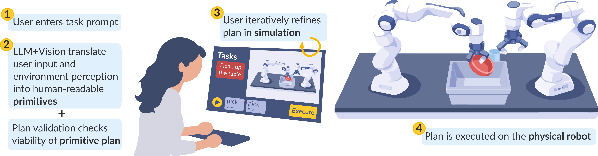

Generate
Describe a manipulation task in natural language. SHRIMP translates it into a hierarchical plan composed of robot primitives.

The key idea
Language makes robot programming approachable, but an instruction can be ambiguous and an LLM-generated plan can be difficult to inspect. SHRIMP keeps people in the loop by making the plan visible, editable, and testable before anything moves in the real world.
Describe a manipulation task in natural language. SHRIMP translates it into a hierarchical plan composed of robot primitives.
Preview the plan in simulation, then revise it through natural-language re-prompting or direct, explicit corrections.
Once the simulated behavior matches the user's intent, send the validated plan to the physical robot system.

As collaborative robots have entered domains such as manufacturing, agriculture, and healthcare, programming or adapting robot behavior typically requires robotic expertise that most end users lack. Natural language lowers this barrier. Recent advancements in large language models (LLMs) have made it feasible to translate natural language into robot task plans. However, language-based task specification can suffer from semantic ambiguity, and generative models lack transparency for how language instructions are translated into robot actions, making it difficult for users to validate plans before execution. To address these issues, we introduce SHRIMP: Simulation-driven Human-in-the-loop Refinement Interface for Manipulation Planning. SHRIMP allows users to automatically generate a hierarchical robot primitive plan using natural language and iteratively revise their plan through re-prompting and explicit correction. At each revision, SHRIMP allows users to validate their plan in simulation, and once satisfied, execute it on the physical robot. Through a user study involving participants planning tabletop kitchen tasks (N = 35), we validate that SHRIMP improves perceived control and enhances robot transparency.
System design
The interface coordinates planning, simulation, perception, and robot control. A hierarchical representation keeps the plan understandable at the task level while grounding each step in executable manipulation primitives.

User study
Participants used SHRIMP to plan tabletop kitchen tasks. The study examined whether iterative, simulation-backed refinement helps non-experts understand and shape a robot's behavior.
Iterative revision gave participants more agency over how their instructions became robot behavior.
Exposing the hierarchical plan and its simulated outcome helped participants inspect the robot's intended actions before execution.
These findings support simulation-driven refinement as a way to address ambiguity in language-based robot programming while keeping final decisions with the user.